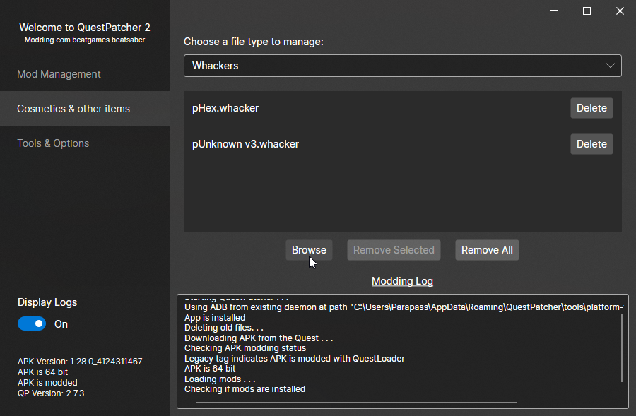

To install PC sabers, find your Beat Saber install folder (usually C:\Program Files (x86)\Steam\steamapps\common\Beat Saber if using Steam, or in C:\Program Files\Oculus\Software\Software\hyperbolic-magnetism-beat-saber).
The folder you need to drag the .saber files to is called CustomSabers. If you're using ModAssistant's OneClick™ Install, then the sabers will be automatically installed for you.
Once the sabers are in the folder, launch the game and check SaberFactory/CustomSabers in the Mods menu to the left and you will have the sabers you've downloaded.
To install Quest sabers, open QuestPatcher, connect your Quest to your PC, and go to the 'Cosmetics & other items' tab.
Under 'Choose a file type to manage', click the box and select 'Whackers'.
Then press Browse and look for the downloaded .whacker file from the site.
Your .whacker file should be automatically installed into your game and should be available on the next launch.